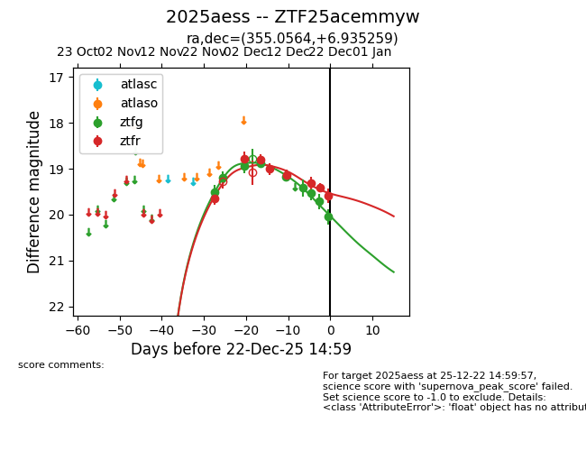
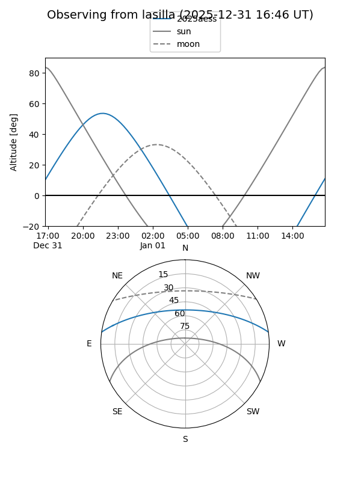
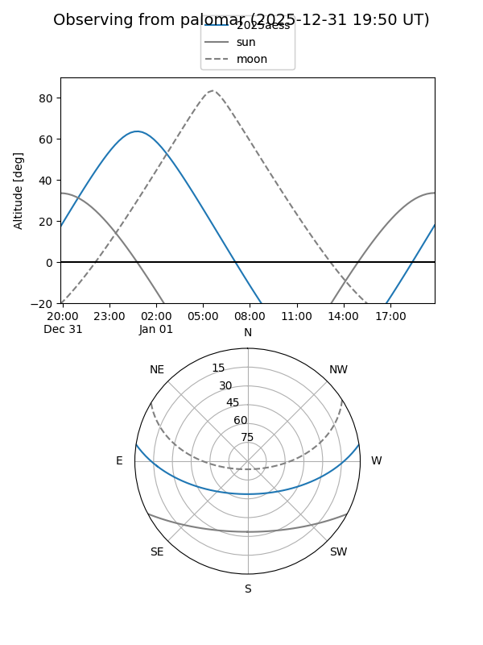
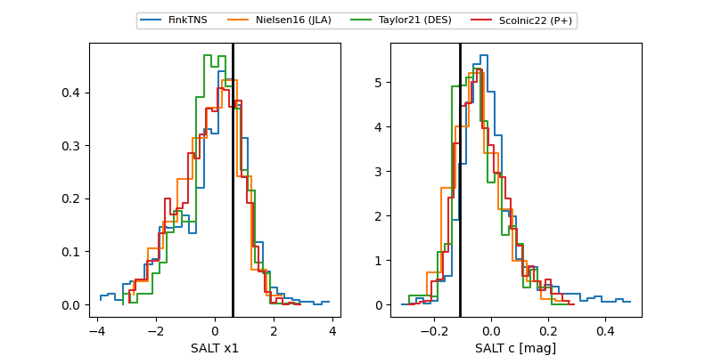

2025aess
Target 2025aess at 2025-12-18 10:58
Aliases and brokers:
FINK: fink-portal.org/ZTF25acemmyw
Lasair: lasair-ztf.lsst.ac.uk/objects/ZTF25acemmyw
ALeRCE: alerce.online/object/ZTF25acemmyw
TNS: wis-tns.org/object/2025aess
YSE: ziggy.ucolick.org/yse/transient_detail/2025aess
alt names
ZTF25acemmyw (ztf,fink_ztf)
2025aess (tns,yse)
Coordinates:
equatorial (ra, dec) = 355.0564,+6.93526
equatorial (HMS+DMS) = 23:40:13.54,+06:56:06.93
galactic (l, b) = (93.5225,-51.82348)
Photometry
last ztfg=19.53, ztfr=19.32
7 ztfg, 6 ztfr detections
Lightcurve

Visibility


Additional plots
